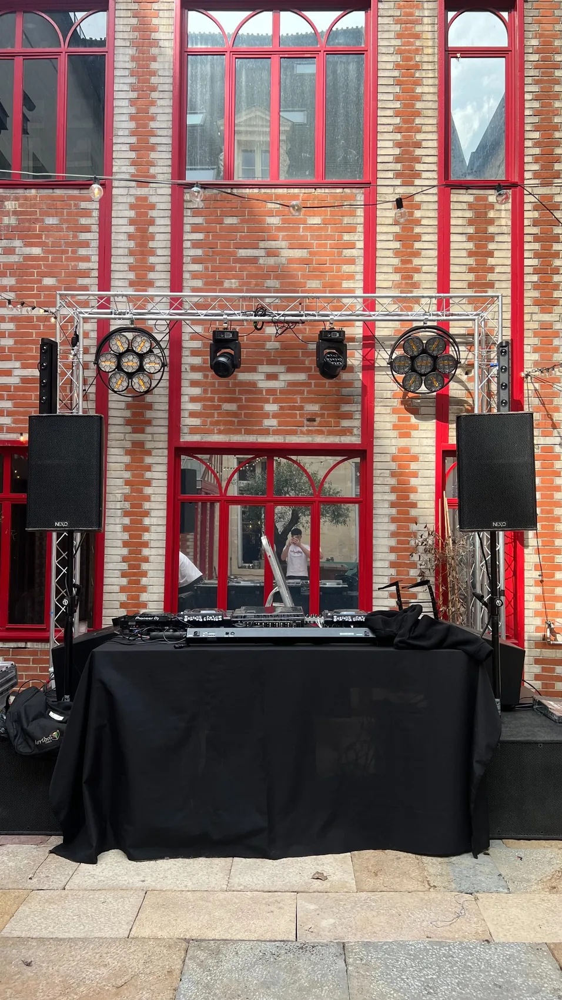
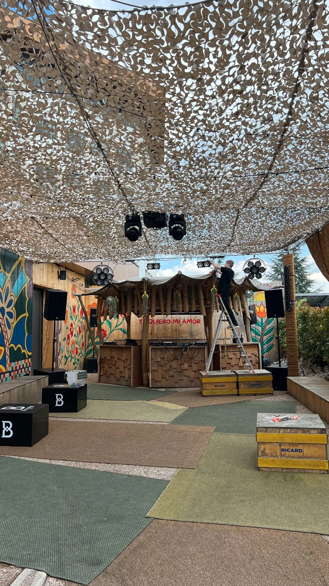

Location son
Enceintes, caissons, configurations compactes ou plus puissantes selon le lieu et le nombre de personnes.
Pulse
Pulse accompagne les événements privés, associatifs et professionnels avec des solutions de sonorisation, d’éclairage et d’installation technique adaptées au lieu, au public et à l’ambiance recherchée.

Offre Pulse
L’objectif est de proposer une configuration cohérente : puissance adaptée, implantation propre, câblage organisé, lumière équilibrée et préparation en amont.
Enceintes, caissons, configurations compactes ou plus puissantes selon le lieu et le nombre de personnes.
Jeux de lumière, barres LED, lyres, ambiance colorée et implantation adaptée aux contraintes du lieu.
Vérification du matériel, câblage, positionnement, essais et ajustements avant l’événement.
Présence possible sur site, aide au montage, réglages de base et adaptation à la soirée.
Ambiance
Une installation réussie ne dépend pas seulement de la puissance. Elle dépend du placement, de l’équilibre, de la cohérence visuelle et de l’adaptation au lieu.
Preuves Pulse
Salle de réception, cour intérieure, restaurant, espace DJ, home cinéma : les configurations changent, la logique reste la même.





Pulse
Indique le lieu, la date, le nombre de personnes, le type de musique et le niveau d’ambiance recherché.
Demander une configuration